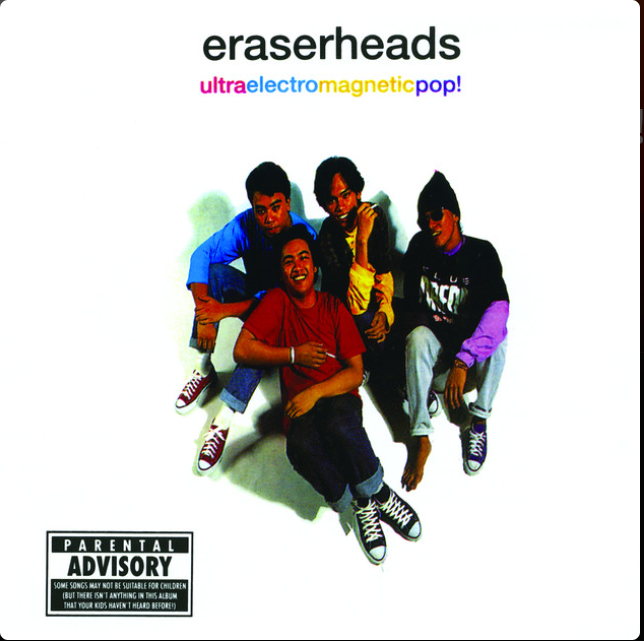
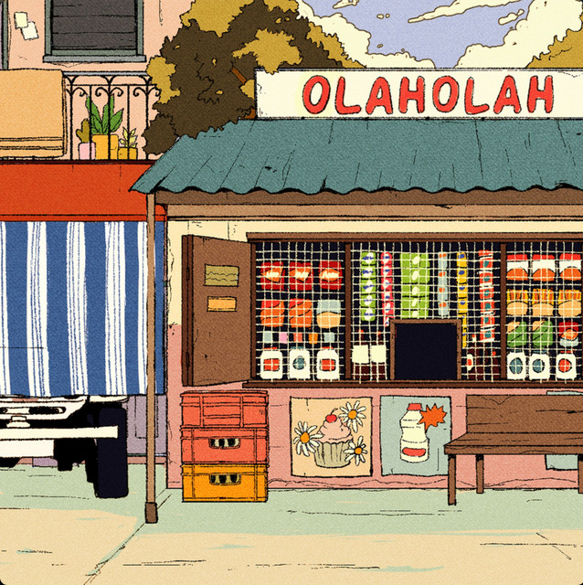

LEGEND (Hover): üéÄ Pink - Kilig, üîÆ Light Purple - Rock/Bobble Head, üëñ Blue - Sway
| Album Cover | Song Name | Artist | Video | Vibes | Review / Notes |
|---|---|---|---|---|---|
| Raining in Manila | Lola Amour | Bobble Head | It's one of the best songs to listen to on rainy days and when you want to jump! | ||
| Kahel na Langit | Maki | Kilig | This song is so fun to sing along to!! It gives a soft but chill and musical atmosphere. It's an OST-core song. | ||
 |
Di Na Ako | Chrstn | Sway | I LOVE HER VOICE AND VIBE!! I like singing along to it too. The message is kinda sad and somber though... | |
| Pasilyo | Sunkissed Lola | Sway | First ever OPM song in my playlist and in my "songs to sing." I love the vibes and range!! <3 | ||
|  | Ligaya | Eraserheads | Rock | LOVE VIBING TO THIS! It's not my favorite to sing, but it's one of my favorite to listen to. I like the mixing and use of instruments and vocals!! | |
|  | Tumatalima | Sunkissed Lola | Kilig | This is one of the best songs to dedicate to your friends or... :D I LOVE THE VIBE AND VOCALS! The guitar is actually so cool. | |
| Araw-Araw | Ben & Ben | Sway | This song is so HIMIG CORE! I can't really sing the original melody anymore because I know the alto part but I love, love, love this song so much. Both the message and the actual audio is so sweet and wholesome. |